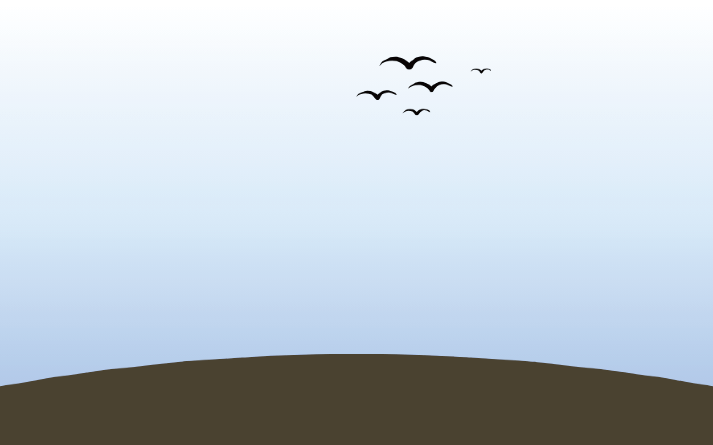
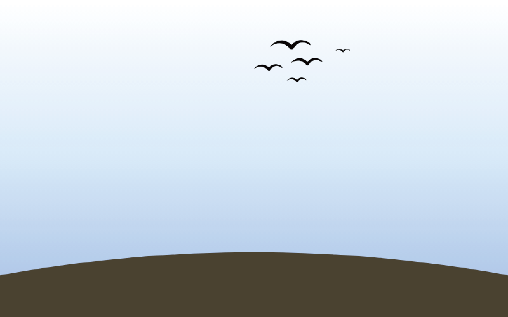
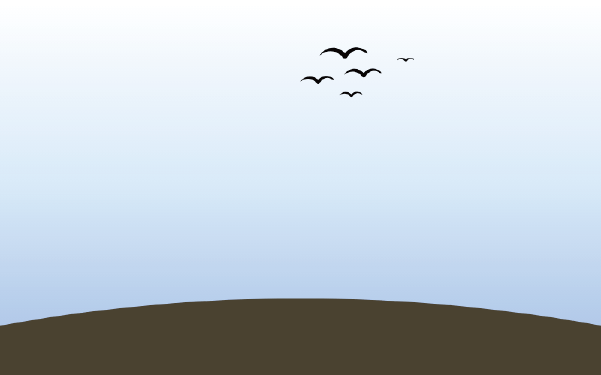
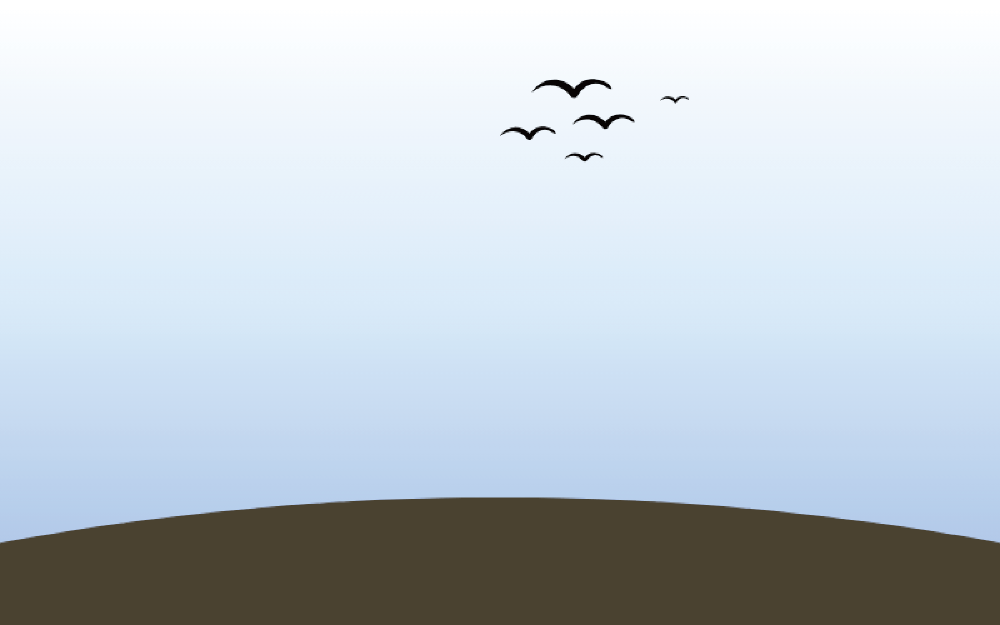

寮國Laos

 



冷知識
這裡整理了一些寮國特別的冷知識，希望你會喜歡
冷知識 Fun Facts
 醫療
醫療
雖然寮國是世界上最不發達的國家之一，但它是實行完全免費醫療
駕照
寮國駕照是直接花錢買的，沒有駕照，不需要考試，給錢就有
投資
在國家商務部的對外投資指南上面有一條：寮國目前沒有防止商業賄賂的相關法律
海軍
寮國沒有海岸線，卻在湄公河建立了一支海軍部隊，因為首都在湄公河旁，與泰國隔河相望
炸彈
越戰時，美國為了切斷北越供給線，瘋狂轟炸寮國，投放炸藥量超過了二戰時盟約國投放炸藥的總和，至今還有近8000萬顆集束炸彈沒有爆炸
相關網站
以下是我們資料來源的相關網站，有興趣的話也可以去看看喔
參考網站介紹
其他內容
我們也搜尋了網路許多相關內容來完成這個網站，因某些原因不適合呈列於此，我們將放在參考資料，歡迎大家前往瀏覽
訪談影片
我們訪談了一些當地人，他們分享了許多當地人才知道的內容，非常感謝他們的幫助
寮國訪談影片
 冷知識
冷知識
 相關網站
相關網站
 訪談影片
訪談影片